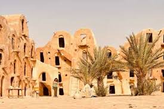

Vieux Ksar de Kébili
Le vieux ksar de Kébili est un témoignage vivant de l'architecture traditionnelle saharienne. Ses ruelles étroites, ses maisons en pisé et ses passages couverts offrent une plongée dans l'histoire de cette ancienne cité caravanière du désert.